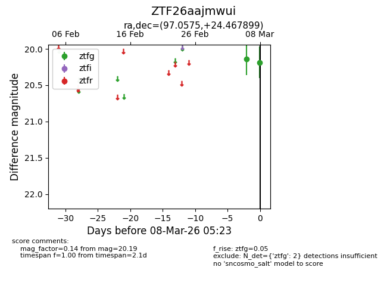
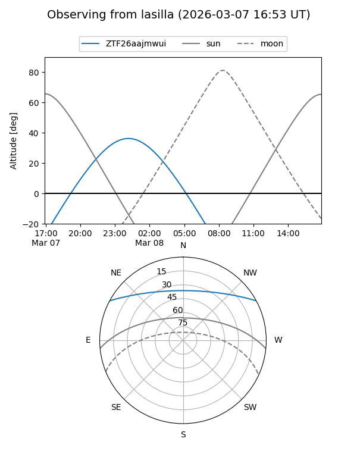
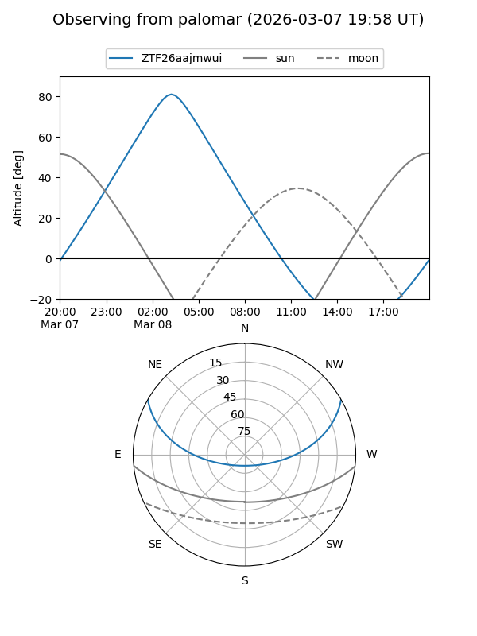

ZTF26aajmwui
Target ZTF26aajmwui at 2026-03-08 05:26
Aliases and brokers:
FINK: link
Lasair: link
ALeRCE: link
alt names
ZTF26aajmwui (ztf,fink_ztf)
Coordinates:
equatorial (ra, dec) = 97.0575,+24.46790
equatorial (HMS+DMS) = 06:28:13.80,+24:28:04.44
galactic (l, b) = (188.5420,+6.14077)
Flags:
Photometry:
last ztfg=20.19
2 ztfg detections
Lightcurve

Visibility


Additional plots